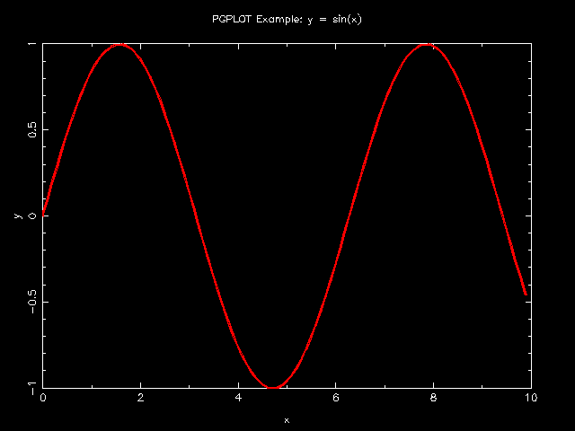

require 'narray' require 'pgplot' include Pgplot n = 100 x = NArray.sfloat(n).indgen!/10 y = NMath.sin(x) pgopen # open PGPLOT session pgenv 0, n/10, -1, 1 # set "Plotter Environment" and draw box. pglab "x", "y", "PGPLOT Example: y = sin(x)" pgsci 2 # set Color Index = Red. pgslw 5 # set Line Width. pgline x, y # plot Line.
